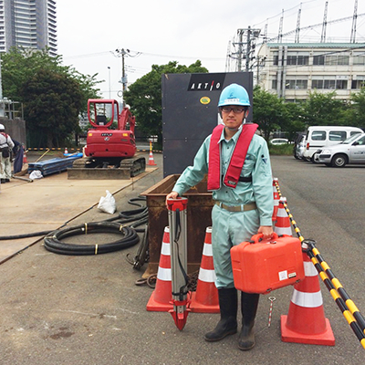
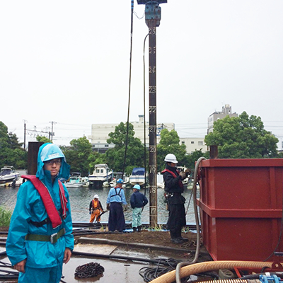
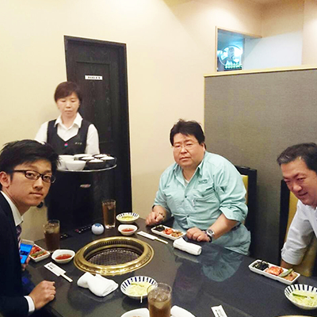
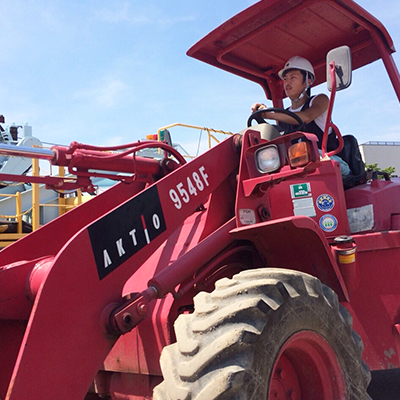

今日は川にH鋼を打つため、ジェットカッターの準備や、測量作業の手伝い、安全対策旗の設置を行います。
昼食後、雨が降ってきたのでカッパを着て、川にジェットカッターで杭を打つ様子を見学させてもらいます。
陸地では30分で終わる作業だったので、すぐに終わると思っていましたが、川では何度も調整や中断をくり返し、一つの杭を打つのに1時間半かかりました。
雨の影響もあるかもしれません。雨中の作業は視界も川の状態も悪く、とても大変そうでした。


帰りに先輩方が焼き肉に連れて行ってくれました！
初めての現場での一週間はクタクタでしたが、優しい先輩方との食事で疲れもふきとびました。
今日は悪天候の場合の現場の様子を
身を持って経験できたので、とても勉強になりました。
安全に注意し冷静に作業が行えるよう心がけていきたいです。
土日は休みなので、
今週教わった事を復習して来週からまたがんばります！
一週間おつかれさまでした！
大成建設協力会組織の倉友会が主催する、技能講習研修を1ヶ月間泊まり込みで受けてきました。
測量や重機の運転、トンネル工事の見学など、様々なことを経験しました。合宿中は他社の同年代の仲間たちとも交流をすることができ、技術以外の大切なものも学ぶことが出来た充実した一ヶ月でした。また研修期間中に下記5つの資格取得することができました！
- 玉掛け
- 小型移動式クレーン運転
- 車両系建設機械(整地・運搬・積込み用および掘削用)運転
- 高所作業車運転
- 低圧電気取扱業務特別教育

これからは、この研修の成果を活かし、現場で即戦力として認めてもらえるよう精一杯努力したいと思います。
また、来年以降入ってくる後輩たちのお手本になれるよう、どんどん成長していきたいです！